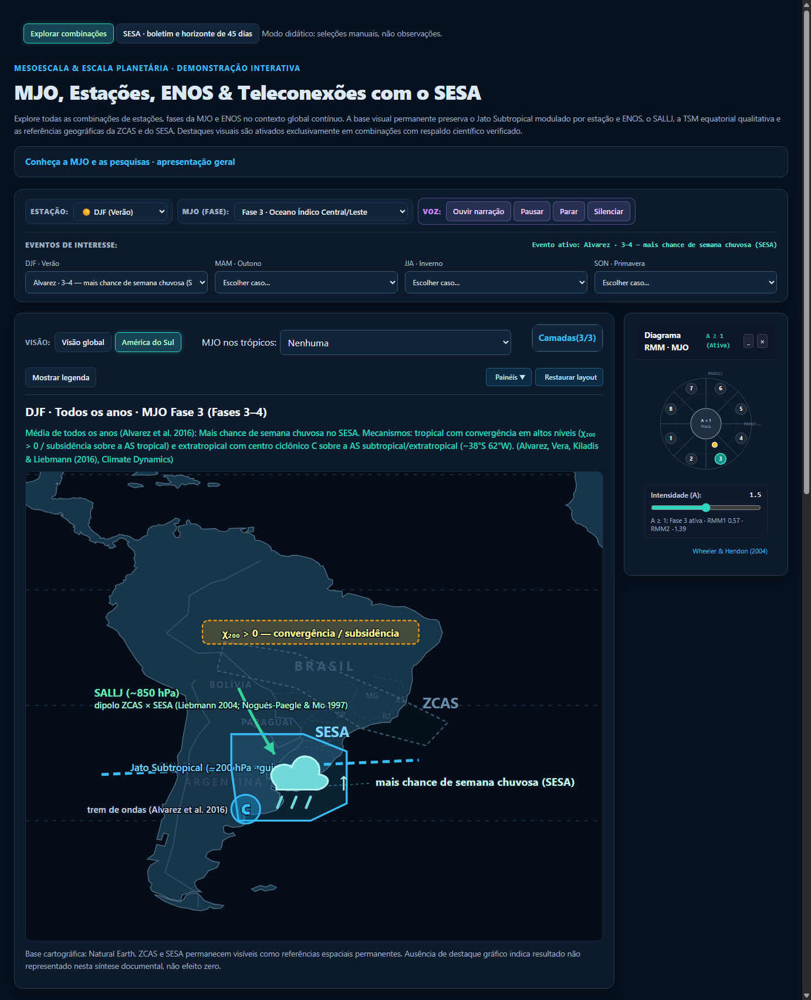
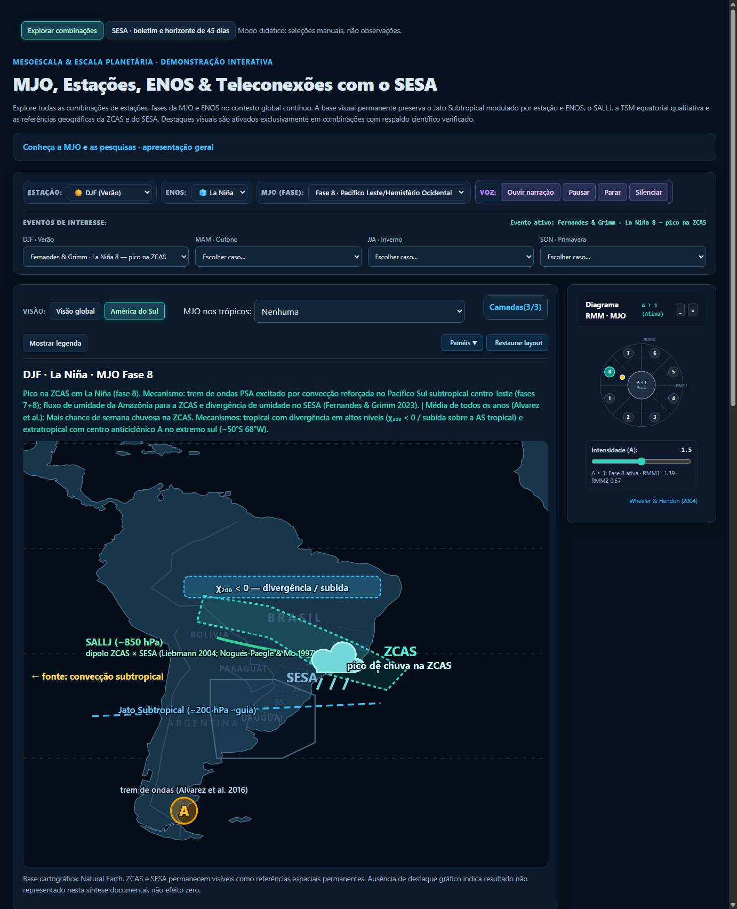
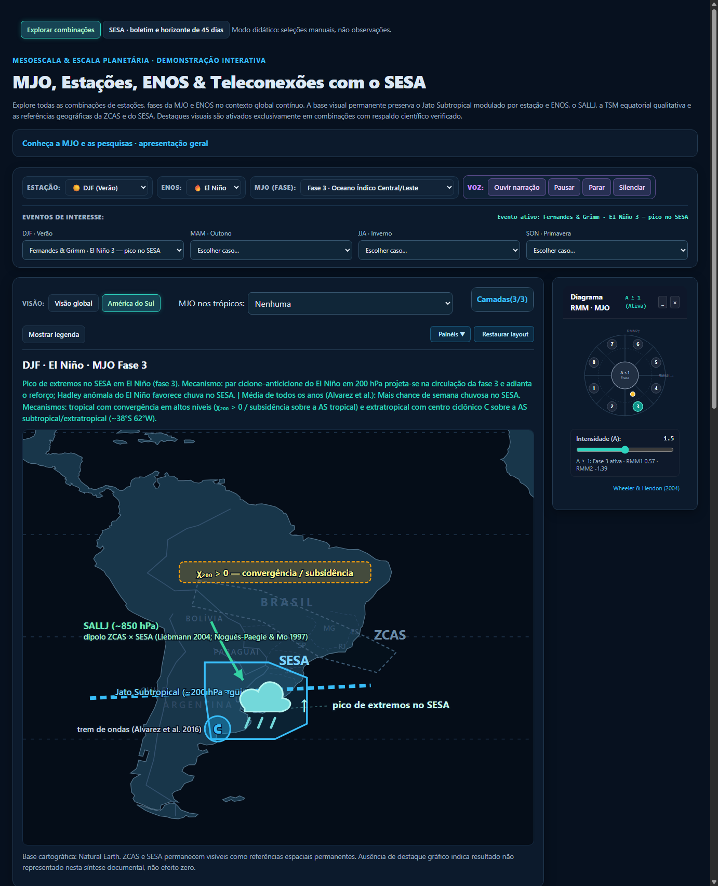
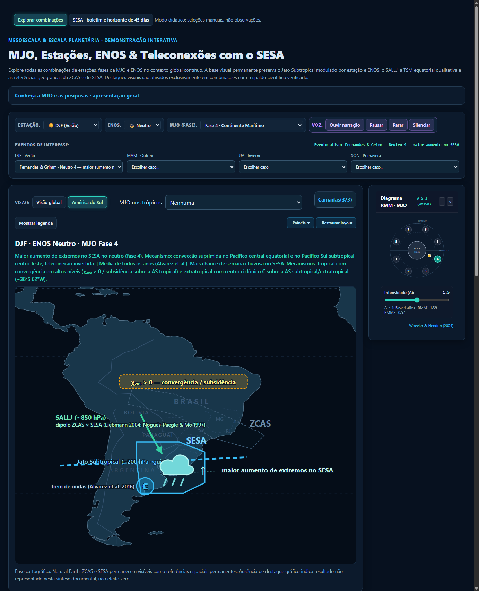
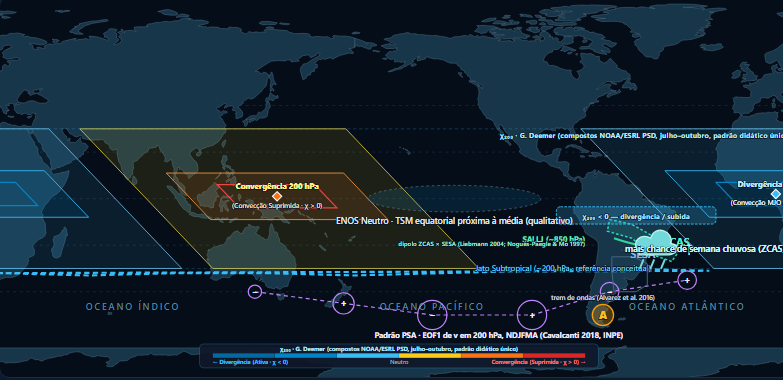
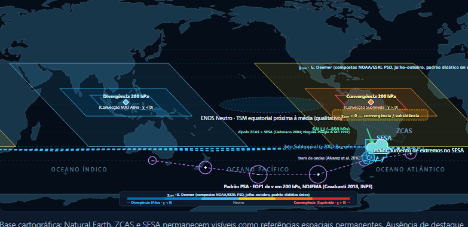
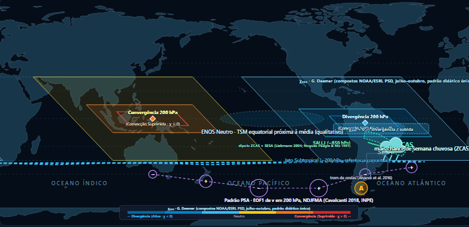
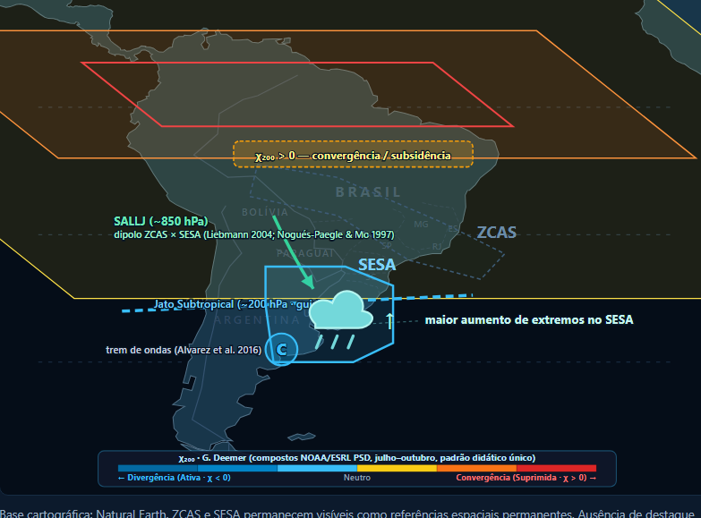

revisaoTodos os requisitos do lote fechado foram implementados e validados por 1536 configurações automatizadas e testes funcionais (0 erros de console, 0 ocorrências de metric, nomenclatura estrita SESA e ZCAS, 10 casos curados, paralelogramos de χ200 estritamente paralelos e concêntricos com limites fixos de latitude).
Aguardando decisão: Avaliação do Reinaldo no branch revisao antes de qualquer merge no main.
Abrir demonstração local · Ver STATUS.md completo · Protocolo permanente

Sem elipse de TSM do ENOS ("composição de todos os anos"), SALLJ estendido ao SESA com rótulos a oeste dos Andes sobre o Pacífico sem corte, centro ciclônico C (~38°S 62°W) desamontoado da nuvem e PSA.

SALLJ curvando para leste/nordeste em direção à ZCAS, fluxo de umidade da Amazônia para a ZCAS e divergência no SESA, convecção fonte subtropical desamontoada do Jato Subtropical, centro anticiclônico A (~50°S 68°W).

Pico de extremos no SESA. Par ciclone–anticiclone do El Niño em 200 hPa reforçando a fase 3 e Hadley anômala favorecendo chuva e extremos no SESA.

Maior aumento de extremos no neutro. Convecção suprimida no Pacífico Central e trem de ondas invertido estimulando extremos sobre o SESA.

Paralelogramos com bordas externas fixas em 30°N e 30°S (W=60°), médio (H=20°, W=40°) e núcleo (H=10°, W=22°, contorno puro). Divergência em 10°E e convergência em 145°E.

Divergência ativa em 115°E sobre o Continente Marítimo e convergência suprimida em 60°W sobre a América do Sul tropical, com inclinação para leste e limites estritos em ±30°.

Divergência em 65°W sobre a América do Sul e convergência em 135°E em formato de paralelogramos poligonais com zero elipses.

Visão regional da América do Sul na fase 4: paralelogramos de convergência suprimida (60°W) perfeitamente integrados com o dipolo SESA/ZCAS e SALLJ.